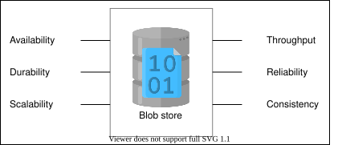
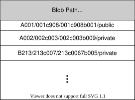
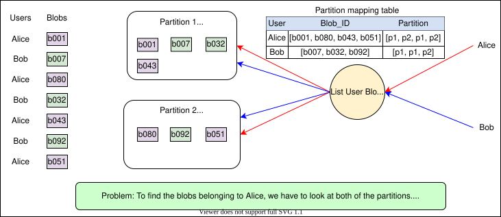
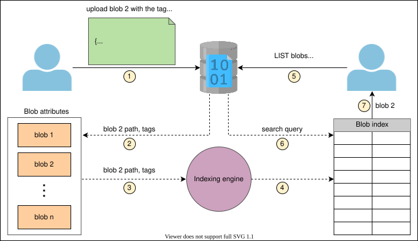
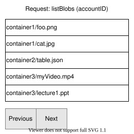
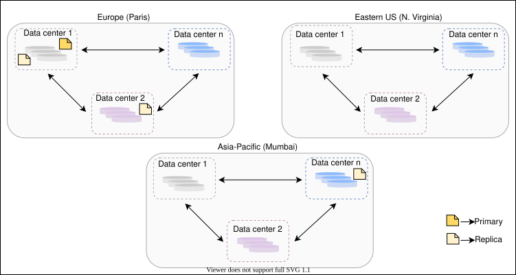

20. Blob Store
System Design: A Blob Store
System Design: A Blob Store
Get an introduction to the blob store and get ready to design it.
We'll cover the following
What is a blob store?#
Blob store is a storage solution for unstructured data. We can store photos, audio, videos, binary executable codes, or other multimedia items in a blob store. Every type of data is stored as a blob. It follows a flat data organization pattern where there are no hierarchies, that is, directories, sub-directories, and so on.
Mostly, it’s used by applications with a particular business requirement called write once, read many (WORM), which states that data can only be written once and that no one can change it. Just like in Microsoft Azure, the blobs are created once and read many times. Additionally, these blobs can’t be deleted until a specified interval, and they also can’t be modified to protect critical data.
Note: It isn’t necessary for all applications to have this WORM requirement. However, we are assuming that the blobs that are written can’t be modified. Instead of modifying, we can upload a new version of a blob if needed.
Why do we use a blob store?#
Blob store is an important component of many data-intensive applications, such as YouTube, Netflix, Facebook, and so on. The table below displays the blob storage used by some of the most well-known applications. These applications generate a huge amount of unstructured data every day. They require a storage solution that is easily scalable, reliable, and highly available, so that they can store large media files. Since the amount of data continuously increases, these applications need to store an unlimited number of blobs. According to some estimates, YouTube requires more than a petabyte of additional storage per day. In a system like YouTube, a video is stored in multiple resolutions. Additionally, the video in all resolutions is replicated many times across different data centers and regions for availability purposes. That’s why the total storage required per video is not equal to the size of the uploaded video.
System | Blob Store |
Netflix | S3 |
YouTube | Google Cloud Storage |
Tectonic |
How do we design a blob store system?#
We have divided the design of the blob store into five lessons and a quiz.
- Requirements: In this lesson, we identify the functional and non-functional requirements of a blob store. We also estimate the resources required by our blob store system.
- Design: This lesson presents us with a high-level design, the API design, and a detailed design of the blob store, while explaining the details of all the components and the workflow.
- Design considerations: In this lesson, we discuss some important aspects of design. For example, we learn about the database schema, partitioning strategy, blob indexing, pagination, and replication.
- Evaluation: In this lesson, we evaluate our blob store based on our requirements.
- Quiz: In this lesson, we assess understanding of the blob store design.
Let’s start with the requirements of a blob store system.
Requirements of a Blob Store's Design
Requirements of a Blob Store's Design
Identify the requirements of and make estimations for the blob store.
Requirements#
Let’s understand the functional and non-functional requirements below:
Functional requirements#
Here are the functional requirements of the design of a blob store:
- Create a container: The users should be able to create containers in order to group blobs. For example, if an application wants to store user-specific data, it should be able to store blobs for different user accounts in different containers. Additionally, a user may want to group video blobs and separate them from a group of image blobs. A single blob store user can create many containers, and each container can have many blobs, as shown in the following illustration. For the sake of simplicity, we assume that we can’t create a container inside a container.

- Put data: The blob store should allow users to upload blobs to the created containers.
- Get data: The system should generate a URL for the uploaded blob, so that the user can access that blob later through this URL.
- Delete data: The users should be able to delete a blob. If the user wants to keep the data for a specified period of time (retention time), our system should support this functionality.
- List blobs: The user should be able to get a list of blobs inside a specific container.
- Delete a container: The users should be able to delete a container and all the blobs inside it.
- List containers: The system should allow the users to list all the containers under a specific account.

Non-functional requirements#
Here are the non-functional requirements of a blob store system:
- Availability: Our system should be highly available.
- Durability: The data, once uploaded, shouldn’t be lost unless users explicitly delete that data.
- Scalability: The system should be capable of handling billions of blobs.
- Throughput: For transferring gigabytes of data, we should ensure a high data throughput.
- Reliability: Since failures are a norm in distributed systems, our design should detect and recover from failures promptly.
- Consistency: The system should be strongly consistent. Different users should see the same view of a blob.

Resource estimation#
Let’s estimate the total number of servers, storage, and bandwidth required by a blob storage system. Because blobs can have all sorts of data, mentioning all of those types of data in our estimation may not be practical. Therefore, we’ll use YouTube as an example, which stores videos and thumbnails on the blob store. Furthermore, we’ll make the following assumptions to complete our estimations.
Assumptions:
- The number of daily active users who upload or watch videos is five million.
- The number of requests per second that a single blob store server can handle is 500.
- The average size of a video is 50 MB.
- The average size of a thumbnail is 20 KB.
- The number of videos uploaded per day is 250,000.
- The number of read requests by a single user per day is 20.
Number of servers estimation#
From our assumptions, we use the number of daily active users (DAUs) and queries a blob store server can handle per second. The number of servers that we require is calculated using the formula given below:
Queries handled per serverNumber of active users=10K servers
Storage estimation#
Considering the assumptions written above, we use the formula given below to compute the total storage required by YouTube in one day:
Totalstorage/day=No. of videos/day×(Storage/video+Storage/thumbnail)
Putting the numbers from above into the formula gives us 12.51 TB/day, which is the approximate storage required by YouTube per day for keeping a single copy of the uploaded video in a single resolution.
Total Storage Required to Store Videos and Thumbnails Uploaded Per Day on YouTube
| No. of videos per day | Storage per video (MB) | Storage per thumbnail (KB) | Total storage per day (TB) |
| 250000 | 50 | 20 | f12.51 |
Bandwidth estimation#
Let’s estimate the bandwidth required for uploading data to and retrieving data from the blob store.
Incoming traffic: To estimate the bandwidth required for incoming traffic, we consider the total data uploaded per day, which indirectly means the total storage needed per day that we calculated above. The amount of data transferred to the servers per second can be computed using the following formula:
Totalbandwidth=24×60×60Totalstorage_day
Bandwidth Required for Uploading Videos on YouTube
| Total storage per day (TB) | Seconds in a day | Bandwidth (Gb/s) |
| 12.51 | 86400 | f1.16 |
Outgoing traffic: Since the blob store is a read-intensive store, most of the bandwidth is required for outgoing traffic. Considering the aforementioned assumptions, we calculate the bandwidth required for outgoing traffic using the following formula:
Totalbandwidth=Seconds in a dayNo. of active users/day×No. of requests/user/day×Totaldata_size
Bandwidth Required for Downloading Videos on YouTube
| No. of active users per day | No. of requests per user | Data size (MB) | Bandwidth required (Gb/s) |
| 5000000 | 20 | 50 | f462.96 |
Building blocks we will use#
We use the following building blocks in the design of our blob store system:
- Rate Limiter: A rate limiter is required to control the users’ interaction with the system.
- Load balancer: A load balancer is needed to distribute the request load onto different servers.
- Database: A database is used to store metadata information for the blobs.
- Monitoring: Monitoring is needed to inspect storage devices and the space available on them in order to add storage on time if needed.
In this lesson, we discussed the requirements and estimations of the blob store system. We’ll design the blob store system in the next lesson, all while following the delineated requirements.
Design of a Blob Store
Design of a Blob Store
Learn how to incorporate certain requirements into the design of a blob store.
We'll cover the following
High-level design#
Let’s identify and connect the components of a blob store system. At a high level, the components are clients, front-end servers, and storage disks.
The client’s requests are received at the front-end servers that process the request. The front-end servers store the client’s blob onto the storage disks attached to them.
API design#
Let’s look into the API design of the blob store. All of the functions below can only be performed by a registered and authenticated user. For the sake of brevity, we don’t include functionalities like registration and authentication of users.
Create container
The createContainer operation creates a new container under the logged-in account from which this request is being generated.
createContainer(containerName)
Parameter | Description |
| This is the name of the container. It should be unique within a storage account. |
Upload blobs
The client’s data is stored in the form of Bytes in the blob store. The data can be put into a container with the following code:
putBlob(containerPath, blobName, data)
Parameter | Description |
| This is the path of the container in which we upload the blob. It consists of the |
| This is the name of the blob. It should be unique within a container, otherwise our system will give the blob that was uploaded later a version number. |
| This is a file that the user wants to upload to the blob store. |
Note: This API is just a logical way to spell out needs. We might use a multistep streaming call for actual implementation if the data size is very large.
Download blobs
Blobs are identified by their unique name or ID.
getBlob(blobPath)
Parameter | Description |
| This is the fully qualified path of the data or file, including its unique ID. |
Delete blob
The deleteBlob operation marks the specified blob for deletion. The actual blob is deleted during garbage collection.
deleteBlob(blobPath)
Parameter | Description |
| This is the path of the blob that the user wants to delete. |
List blobs
The listBlobs operation returns a list of blobs under the specified container or path.
listBlobs(containerPath)
Parameter | Description |
| This is the path to the container from which the user wants to get the list of blobs. |
Delete container
The deleteContainer operation marks the specified container for deletion. The container and any blobs in it are deleted later during garbage collection.
deleteContainer(containerPath)
Parameter | Description |
| This is the path to the container that the user wants to delete. |
List containers
The listContainers operation returns a list of the containers under the specified user’s blob store account.
listContainers(accountID)
Parameter | Description |
| This is the ID of the user who wants to list their containers. |
Note: The APIs used to retrieve blobs provide metadata containing size, version number, access privileges, name, and so on.
Detailed design#
We start this section by identifying the key components that we need to complete our blob store design. Then, we look at how these components connect to fulfill our functional requirements.
Components#
Here is a list of components that we use in the blob store design:
- Client: This is a user or program that performs any of the API functions that are specified.
- Rate limiter: A rate limiter limits the number of requests based on the user’s subscription or limits the number of requests from the same IP address at the same time. It doesn’t allow users to exceed the predefined limit.
- Load balancer: A load balancer distributes incoming network traffic among a group of servers. It’s also used to reroute requests to different regions depending on the location of the user, different data centers within the same region, or different servers within the same data center. DNS load balancing can be used to reroute the requests among different regions based on the location of the user.
- Front-end servers: Front-end servers forward the users’ requests for adding or deleting data to the appropriate storage servers.
- Data nodes: Data nodes hold the actual blob data. It’s also possible that they contain a part of the blob’s data. Blobs are split into small, fixed-size pieces called chunks. A data node can accommodate all of the chunks of a blob or at least some of them.
- Master node: A master node is the core component that manages all data nodes. It stores information about storage paths and the access privileges of blobs. There are two types of access privileges: private and public. A private access privilege means that the blob is only accessible by the account containing that blob. A public access privilege means that anyone can access that blob.
Note: Each of the data nodes in the cluster send the master node a heartbeat and a chunk report regularly. The presence of a heartbeat indicates that the data node is operational. A chunk report lists all the chunks on a data node. If a data node fails to send a heartbeat, the master node considers that node dead and then processes the user requests on the replica nodes. The master node maintains a log of pending operations that should be replayed on the dead data node when it recovers.
- Metadata storage: Metadata storage is a distributed database that’s used by the master node to store all the metadata. Metadata consists of account metadata, container metadata, and blob metadata.
- Account metadata contains the account information for each user and the containers held by each account.
- Container metadata consists of the list of the blobs in each container.
- Blob metadata consists of where each blob is stored. The blob metadata is discussed in detail in the next lesson.
- Monitoring service: A monitoring service monitors the data nodes and the master node. It alerts the administrator in case of disk failures that require human intervention. It also gets information about the total available space left on the disks to alert administrators to add more disks.
- Administrator: An administrator is responsible for handling notifications from the monitoring services and conducting routine checkups of the overall service to ensure reliability.
The architecture of how these components interconnect is shown in the diagram below:

Workflow#
We describe the workflow based on the basic operations we can perform on a blob store. We assume that the user has successfully logged in and a container has already been created. A unique ID is assigned to each user and container. The user performs the following operations in a specific container.
Write a blob
- The client generates the upload blob request. If the client’s request successfully passes through the rate limiter, the load balancer forwards the client’s request to one of the front-end servers. The front-end server then requests the master node for the data nodes it should contact to store the blob.
- The master node assigns the blob a unique ID using a unique ID generator system. It then splits the large-size blob into smaller, fixed-size chunks and assigns each chunk a data node where that chunk is eventually stored. The master node determines the amount of storage space that’s available on the data nodes using a free-space management system.
- After determining the mapping of chunks to data nodes, the front-end servers write the chunks to the assigned data nodes.
- We replicate each chunk for redundancy purposes. All choices regarding chunk replication are made at the master node. Hence, the master node also allocates the storage and data nodes for storing replicas.
- The master node stores the blob metadata in the metadata storage. We discuss the blob’s metadata schema in detail in the next lesson.
- After writing the blob, a fully qualified path of the blob is returned to the client. The path consists of the user ID, container ID where the user has added the blob, the blob ID, and the access level of the blob.
Point to Ponder
Question
What does the master node do if a user concurrently writes two blobs with the same name inside the same container?
Reading a blob
- When a read request for a blob reaches the front-end server, it asks the master node for that blob’s metadata.
- The master node first checks whether that blob is private or public, based on the path of the blob and whether we’re authorized to transfer that blob or not.
- After authorizing the blob, the master node looks for the chunks for that blob in the metadata and looks at their mappings to data nodes. The master node returns the chunks and their mappings (data nodes) to the client.
- The client then reads the chunk data from the data nodes.
Note: The metadata information for reading the blob is cached at the client machine, so that the next time a client wants to read the same blob, we won’t have to burden the master node. Additionally, the client’s read operation will be faster the next time.
Point to Ponder
Question
Suppose the master node moves data from one data node to another because of an impending disk failure. The user will now have stale information if they use the cached metadata to access the data. How do we handle such situations?
Deleting a blob Upon receiving a delete blob request, the master node marks that blob as deleted in the metadata, and frees up the space later using a garbage collector. We learn more about garbage collectors in the next lesson.
Point to Ponder
Question
Can the master node be considered a single point of failure? If yes, then how can we cope with this problem?
In the next lesson, we talk about the design considerations of a blob store.
Design Considerations of a Blob Store
Design Considerations of a Blob Store
Learn more details about the different design aspects of the blob store.
Introduction#
Even though we discussed the design of the blob store system and its major components in detail in the previous lesson, a number of interesting questions still require answers. For example, how do we store large blobs? Do we store them in the same disk, in the same machine, or do we divide those blobs into chunks? How many replicas of a blob should be made to ensure reliability and availability? How do we search for and retrieve blobs quickly?. These are just some of the questions that might come up.
This lesson addresses these important design concerns. The table below summarizes the goals of this lesson.
Section | Purpose |
Blob metadata | This is the metadata that’s maintained to ensure efficient storage and retrieval of blobs. |
Partitioning | This determines how blobs are partitioned among different data nodes. |
Blob indexing | This shows us how to efficiently search for blobs. |
Pagination | This teaches us how to conceive a method for the retrieval of a limited number of blobs to ensure improved readability and loading time. |
Replication | This teaches us how to replicate blobs and tells us how many copies we should maintain to improve availability. |
Garbage collection | This teaches us how to delete blobs without sacrificing performance. |
Streaming | This teaches us how to stream large files chunk-by-chunk to facilitate interactivity for users. |
Caching | This shows us how to improve response time and throughput. |
Before we answer the questions listed above, let’s look at how we create layers of abstractions for the user to hide the internal complexity of a blob store. These abstraction layers help us make design-related decisions as well.
There are three layers of abstractions:
- User account: Users uniquely get identified on this layer through their
account_ID. Blobs uploaded by users are maintained in their containers. - Container: Each user has a set of containers that are all uniquely identified by a
container_ID. These containers contain blobs. - Blob: This layer contains information about blobs that are uniquely identified by their
blob_ID. This layer maintains information about the metadata of blobs that’s vital for achieving the availability and reliability of the system.
We can take routing, storage, and sharding decisions on the basis of these layers. The table below summarizes these layers.
Level | Uniquely identified by | Information | Sharded by | Mapping |
User’s blob store account |
| list of |
| Account -> list of containers |
Container |
| List of |
| Container -> list of blobs |
Blob |
| {list of chunks, chunkInfo: data node ID's,.. } |
| Blob -> list of chunks |
Note: We generate unique IDs for user accounts, containers, and blobs using a unique ID generator.
Besides storing the actual blob data, we have to maintain some metadata for managing the blob storage. Let’s see what that data is.
Blob metadata#
When a user uploads a blob, it’s split into small-sized chunks in order to be able to support the storage of large files that can’t fit in one contiguous location, in one data node, or in one block of a disk associated with that data node. The chunks for a single blob are then stored on different data nodes that have enough storage space available to store these chunks. There are billions of blobs that are kept in storage. The master node has to store all the information about the blob’s chunks and where they are stored, so that it can retrieve the chunks on reads. The master node assigns an ID to each chunk.
The information about a blob consists of chunk IDs and the name of the assigned data node for each chunk. We split the blobs into equal-sized chunks. Chunks are replicated to enable them to deal with data node failure. Hence, we also store the replica IDs for each chunk. We have access to all this information pertaining to each blob.
Let’s say we have a blob of 128 MB, and we split it into two chunks of 64 MB each. The metadata for this blob is shown in the following table:
Chunk | Datanode ID | Replica 1 ID | Replica 2 ID | Replica 3 ID |
1 | d1b1 | r1b1 | r2b1 | r3b1 |
2 | d1b2 | r1b2 | r2b2 | r3b2 |
Note: To avoid complexity, the chunk size is fixed for all the blobs in a blob store. The chunk size depends on the performance requirements of a blob store. We desire a larger chunk size to maintain small metadata at the master node because a large chunk size results in a higher disk latency, which leads to slower performance. Interestingly, disks can have almost the same latency for reading and writing a range of data. For example, a disk can have similar latency for writing MBs in the range of 4–8. Additionally, they can have similar latency for writing data in the range of 9–20 MBs. This is due to the use of contiguous sectors on the disks, and caching on the disk and on the server by its OS.
We maintain three replicas for each block. When writing a blob, the master node identifies the data and the replica nodes using its free space management system. Besides handling data node failure, the replica nodes are also used to serve read/write requests, so that the primary node is not overloaded.
In the example above, the blob size is a multiple of the chunk size, so the master node can determine how many Bytes to read for each chunk.
Point to Ponder
Question
What if the blob size isn’t a multiple of our configured chunk size? How does the master node know how many Bytes to read for the last chunk?
Partition data#
We talked about the different levels of abstraction in a blob store—the account layer, the container layer, and the blob layer. There are billions of blobs that are stored and read. There is a large number of data nodes on which we store these blobs. If we look for the data nodes that contain specific blobs out of all of the data nodes, it would be a very slow process. Instead, we can group data nodes and call each group a partition. We maintain a partition map table that contains a list of all the blobs in each partition. If we distribute the blobs on different partitions independent of their container IDs and account IDs, we encounter a problem, as shown in the following illustration:


Partitioning based on the blob IDs causes certain problems. For example, the blobs under a specific container or account may reside in different partitions that add overhead while reading or listing the blobs linked to a particular account or a particular container.
To overcome the problem described above, we can partition the blobs based on the complete path of the blob. The partition key here is the combination of the account ID, container ID, and blob ID. This helps in co-locating the blobs for a single user on the same partition server, which enhances performance.
Note: The partition mappings are maintained by the master node, and these mappings are stored in the distributed metadata storage.
Blob indexing#
Finding specific blobs in a sea of blobs becomes more difficult and time-consuming with an increase in the number of blobs that are uploaded to the storage. The blob index solves the problem of blob management and querying.
To populate the blob index, we define key-value tag attributes on the blobs while uploading the blobs. We use multiple tags, like container name, blob name, upload date and time, and some other categories like the image or video blob, and so on.
As shown in the following illustration, a blob indexing engine reads the new tags, indexes them, and exposes them to a searchable blob index:

We can categorize blobs as well as sort blobs using indexing. Let’s see how we utilize indexing in pagination.
Pagination for listing#
Listing is about returning a list of blobs to the user, depending on the user’s entered prefix. A prefix is a character or string that returns the blobs whose name begins with that particular character or string.
Users may want to list all the blobs associated with a specific account, all the blobs present inside a specific container, or they may want to list some public blobs based on a prefix. The problem is that this list could be very long. We can’t return the whole list to the user in one go. So, we have to return the list of the blobs in parts.
Let’s say a user wants a list of blobs associated with their account and there are a total of 2,000 blobs associated with that account. Searching, returning, and loading too many blobs at once affects performance. This is where paging becomes important. We can return the first five results and give users a next button. On each click of the next button, it returns the next five results. This is called pagination.

The application owners set the number of results to return depending on these factors:
- How much time they assume the users should wait for query response.
- How many results they can return in that time. We have shown five results per page, which is a very small number. We use this number just for visualization purposes.
Point to Ponder
Question
How do we decide which five blobs to return first out of the 2,000 blobs totalt?
For pagination, we need a continuation token as a starting point for the part of the list that’s returned next. A continuation token is a string token that’s included in the response of a query if the total number of queried results exceeds the maximum number of results that we can return at once. As a result, it serves as a pointer, allowing the re-query to pick up where we left off.
Replication#
Replication is carried out on two levels to support availability and strong consistency. To keep the data strongly consistent, we synchronously replicate data among the nodes that are used to serve the read requests, right after performing the write operation. To achieve availability, we can replicate data to different regions or data centers after performing the write operation. We don’t serve the read request from the other data center or regions until we have not replicated data there.
These are the two levels of replication:
- Synchronous replication within a storage cluster.
- Asynchronous replication across data centers and regions.
Synchronous replication within a storage cluster#
A storage cluster is made up of N racks of storage nodes, each of which is configured as a fault domain with redundant networking and power.
We ensure that every data written into a storage cluster is kept durable within that storage cluster. The master node maintains enough data replicas across the nodes in distinct fault domains to ensure data durability inside the cluster in the event of a disk, node, or rack failure.
Note: This intra-cluster replication is done on the critical path of the client’s write requests.
Success can be returned to the client once a write has been synchronously replicated inside that storage cluster. This allows for quick writes because:
- We replicate data within a storage cluster where all the nodes are nearby, thus reducing the latency.
- We use in-lined data copying where we use redundant network paths to copy data to all the replicas in parallel.
This replication technique helps maintain data consistency and availability inside the storage cluster.
Asynchronous replication across data centers and region#
The blob store’s data centers are present in different regions—for example, Asia-Pacific, Europe, eastern US, and more. In each region, we have more than one data center placed at different locations, so that if one data center goes down, we have other data centers in the same region to step in and serve the user requests. There are a minimum of three data centers within each region, each separated by miles to protect against local events like fires, floods, and so on.
The number of copies of a blob is called the replication factor. Most of the time, a replication factor of three is sufficient.

We keep four copies of a blob. One is the local copy within the data center in the primary region to protect against server rack and drive failures. The second copy of the blob is placed in the other data center within the same region to protect against fire or flooding in the data center. The third copy is placed in the data center of a different region to protect against regional disasters.
Garbage collection while deleting a blob#
Since the blob chunks are placed at different data nodes, deleting from many different nodes takes time, and holding a client until that’s done is not a viable option. Due to real-time latency optimization, we don’t actually remove the blob from the blob store against a delete request. Instead, we just mark a blob as “DELETED” in the metadata to make it inaccessible to the user. The blob is removed later after responding to the user’s delete request.
Marking the blob as deleted, but not actually deleting it at the moment, causes internal metadata inconsistencies, meaning that things continue to take up storage space that should be free. These metadata inconsistencies have no impact on the user. For example, for a blob marked as deleted in the metadata, we still have the entries for that blob’s chunks in the metadata. The data nodes are still holding on to that blob’s chunks. Therefore, we have a service called a garbage collector that cleans up metadata inconsistencies later. The deletion of a blob causes the chunks associated with that blob to be freed. However, there could be an appreciable time delay between the time a blob is deleted by a user and the time of the corresponding increase in free space in the blob store. We can bear this appreciable time delay because, in return, we have a real-time fast response benefit for the user’s delete blob request.
The whole deletion process is shown in the following illustration:
Stream a file#
To stream a file, we need to define how many Bytes are allowed to be read at one time. Let’s say we read X number of Bytes each time. The first time we read the first X Bytes starting from the 0th Byte (0 to X−1) and the next time, we read the next X Bytes (X to 2X−1).
Point to Ponder
Question
How do we know which Bytes we have read first and which Bytes we have to read next?
Cache the blob store#
Caching can take place at multiple levels. Below are some examples:
- The metadata for a blob’s chunks is cached on the client side when it’s read for the first time. The client can go directly to the data nodes without communicating to the master node to read the same blob a second time.
- At the front-end servers, we cache the partition map and use it to determine which partition server to forward each request to.
- The frequently accessed chunks are cached at the master node, which helps us stream large objects efficiently. It also reduces disk I/O.
Note: The caching of the blob store is usually done using CDN. The Azure blob store service cache the publicly accessible blob in Azure Content Delivery Network until that blob’s TTL (time-to-live) elapses. The origin server defines the TTL, and CDN determines it from the
Cache-Controlheader in the HTTP response from the origin server.
We covered the design factors that should be taken into account while designing a blob store. Now, we’ll evaluate what we designed.
Evaluation of a Blob Store's Design
Evaluation of a Blob Store's Design
Examine how our blob store design fulfills its requirements.
We'll cover the following
Let’s evaluate how our design helps us achieve our requirements.
Availability#
The replication part of our design makes the system available. For reading the data, we keep four replicas for each blob. Having replicas, we can distribute the request load. If one node fails, the other replica node can serve the request. Moreover, our replica placement strategy handles a whole data center failure and can even handle the situation of region unavailability due to natural disasters. We ensure that enough replicas are available at any point in time using our monitoring service, which makes a copy of the data in a timely manner if the number of failed replicas exceeds the specified threshold.
For write requests, we replicate the data within the cluster in a fault-tolerant way and quickly respond to the user, making the system available for write requests.
To keep the master node available, we keep a backup of its state. In the case of a master-node failure, we start a new instance of the master node, initializing it from the saved state.
Durability#
The replication and monitoring services ensure the durability of the data. The data, once uploaded, is synchronously replicated within a storage cluster. If data loss occurs at one node, we can recover the data from the other nodes. The monitoring service monitors the storage disks. If any disk fails, the monitoring service alerts the administrators to change the disk and sends messages to the master node to copy the content on that disk on to the other available disk or the newly added disk. The master node then updates the mapping accordingly.

Scalability#
The partitioning and splitting of blobs into small-sized chunks helps us scale for billions of blob requests. Blobs are partitioned into separate ranges and served by different partition servers. The partition mappings specify which partition server will serve which particular blob range requests. Partitioning also provides automatic load balancing between partition servers to fulfill the blobs’ traffic needs.
Our system is horizontally scalable for storage. As need for storage arises, we add more data nodes. At some point, though, our master node can become a bottleneck. A single master node can handle 10,000 queries per second (QPS).
Point to Ponder
Question
How can we further scale when our master server hits its limits and we can’t improve its computational abilities by vertical scaling?
Throughput#
We save chunks of a blob on different data nodes that distribute the requests for a blob to multiple machines. Parallel fetching of chunks from multiple data nodes helps us achieve high throughput.
Additionally, caching at different layers— the client side, front-end servers, and the master node—improves our throughput and reduces latency.
Reliability#
We achieve reliability through our monitoring techniques. For example, the heartbeat protocol keeps the master node updated on the status of data nodes. This enables the master node to request data from reliable nodes only. Furthermore, it takes necessary precautions to ensure reliable service. For example, the failure of a node triggers the master node to request an additional replica node.
The monitoring services also alert the administrators to change faulty hardware like failed disks or broken network links or switches. To ensure a reliable service, the master node keeps track of the available space on the disk. If the available space left reaches a certain threshold, an alert is sent to the administrators to add new disks.
Consistency#
We synchronously replicate the disk data blocks inside a storage cluster upon a write request, making the data strongly consistent inside the storage cluster. This is done on the user’s critical path. We serve the subsequent read requests on this data from the same storage cluster until we haven’t replicated this data in another data center and or on other storage clusters.
After responding to the write request and replicating data within the storage cluster, we asynchronously replicate blobs in the data centers placed far away or in other regions to ensure availability.
Conclusion#
We saw that a blob store is designed to store large-sized and unstructured data. A blob store helps applications store images, videos, audio, and so on. Nowadays, it’s used by many applications like YouTube, Facebook, Instagram, Twitter, and more. We designed a system where users can perform a blob store’s basic function. Lastly, we evaluated our design based on our non-functional requirements.
Quiz on the Blob Store's Design
Quiz on the Blob Store's Design
Test your understanding of concepts related to the design of a blob store system via a quiz.
(Select the two most suitable options.) What is a blob store best suited for?.
A)
Storing a huge amount of data
B)
Storing unstructured data
C)
Storing structured data